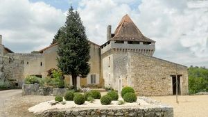
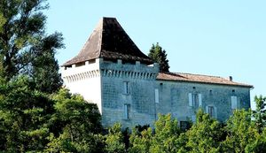
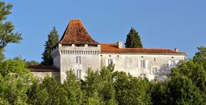
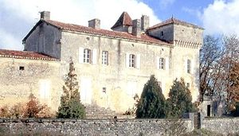
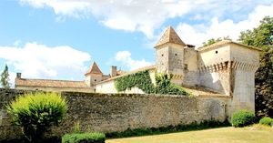
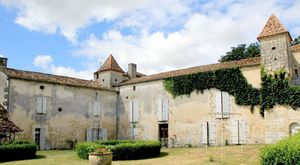
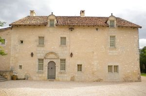
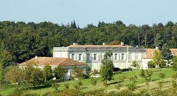
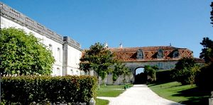

Recensement Jean-Claude Truffet
| Département | 24 — Dordogne |
| Canton | Mareuil |
| Commune | Vieux-Mareuil |
| Type d'édifice | Château |
| Période d'origine | XV-XVII |
| Coordonnées GPS | 45° 25' 56" Nord, 0° 30' 01" Est |









A Vieux-Mareuil, château transformé en hôtel, de Marafy du XVIIIe siècle, Chanet du XVIIe siècle, inscrit au titre des M.H., Fronsac du XVIIe siècle VIEUX-MAREUIL, sous l'ancien régime, appartient à la baronnie de Mareuil. Il n'a jamais constitué une seigneurie. En 1789, la baronnie de Mareuil appartient à la famille de Talleyrand. M. de Talleyrand y avait un droit de justice, délégué au juge des paroisses de la baronnie et percevait la moitié des dîmes. Le bénéfice de Vieux-Mareuil n'était pas important.
CHANET, François Dubreuil, écuyer, sieur de Chanet. Avec Françoise de La Roussie de Bonreceuil, veuve, elle revient habiter le château de Bonreceuil où elle se remarie en 1641 avec Pierre Alabert de La Borie, conseiller du Roi. le fils de François, Jean Dubreuil, écuyer, sieur de Chanet qui épouse Thérèse Etourneau qui lui donne François en 1654 et Françoise en 1658 dernier cité est Françoise de La Garde de Mirabel. La lignée des Lacroze de Chanet, ses filles avec « Jeanne de Lacroze, demoiselle de Chanet et Catherine de Lacroze, dame de Chanet qui épousent en 1713 et 1721 dans léglise de Vieux Mareuil respectivement Pierre Joseph de Froydefont, écuyer, seigneur des Farges et Léonard Durand (de Brantôme) avocat à la cour. propriétaire en 1881 est madame Desmaisons .
MARAFY Le château de Marafy est situé au curdune vaste forêt ponctuée de ruisseaux et détangs, c'est une remarquable demeure au style méridional. Elle est construite en pierre de taille au début du XVIIIe siècle. Le château mêle classicisme français et influences baroques, les façades sont animées par des jeux dombre et de lumière créés par des corniches, des pilastres, des bandeaux et décrochements. Lensemble est harmonieux et régulier. De nombreuses modifications intérieures ont été réalisées, notamment le grand escalier reconstruit au XIXe siècle.
CHANET, un premier bâtiment, le logis nord, flanqué d'une tour d'escalier, fut édifié à la fin du XVe siècle ou au tout début du XVIe siècle. D'importants travaux d'agrandissement sont entrepris dans la seconde moitié du XVIe siècle ou au début du XVIIe siècle: creusement de fossés ; construction d'une tour carrée couronnée de mâchicoulis, et d'un deuxième logis (aile sud) ; mise en place de bâtiments à l'est clôturant l'accès de la demeure ; organisation d'un jardin à l'Est. Après ces travaux, construction d'un gros pavillon reliant le logis nord à la tour carrée, et de l'aile Est couronnée d'une chapelle au décor peint. D'importantes destructions ont eu lieu après 1824. CHAVEROCHE, sur l'emplacement d'un manoir médiéval dont on retrouve encore quelques vestiges, au nord ouest offre deux ailes soudées à angle droit par une tour carrée; défenses et traces de courtines y apparaissent çà et là. Ce fut le fief de la famille de Morelon. FRONSAC appartenait aux grand parents des époux Rouanet, famille Puyjarin et Alphonse et des Roches de Chassay Marie puis par succession des Rouanet les derniers propriétaire les Puyjarinet Aubi et Teissier Elisse
famille deTalleyrand Chaveroche famille de Morelon. Fronsac Famille Puyjarinet
"
a Vieux-Mareuil; Chanet grav 1à3, Chaveroche grav 4 à 6, Fronsac Grav 7, Marafy grav 8-9GPS : 45° 25' 56" Nord, 0° 30' 01" Est